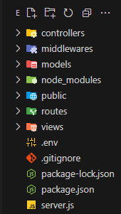

Állományok:
Nyissunk meg a GitBash-t és üssük be a következőt.
touch server.js .env .gitignore
-
server.js - ebben az
állományban kezeljük a szerver-t.
-
.env - környezeti változók
kezelése (belépési azonosítók, jelszavak, port-számok
stb.).
-
.gitignore - azon állományok és
mappák gyűjtőhelye, amelyeket nem akarunk verziókezelés
alá vonni.
Mappák:
Nyissunk meg a Git Bash-t és üssük be a következőt.
mkdir public middlewares models views controllers
routes
-
public - statikus állományok
-
middlewares - "köztes"
metódusok
- models - mondodb modellek
-
views - "megjelenítendő"
állományok
-
controllers - végponti
(endpoints) crud függvények
-
routes - végpontok (endpoints)
kezelése

Ha nincs Git Bash beállítva, akkor a File Manager is
használható, vagy egy másik parancssor.